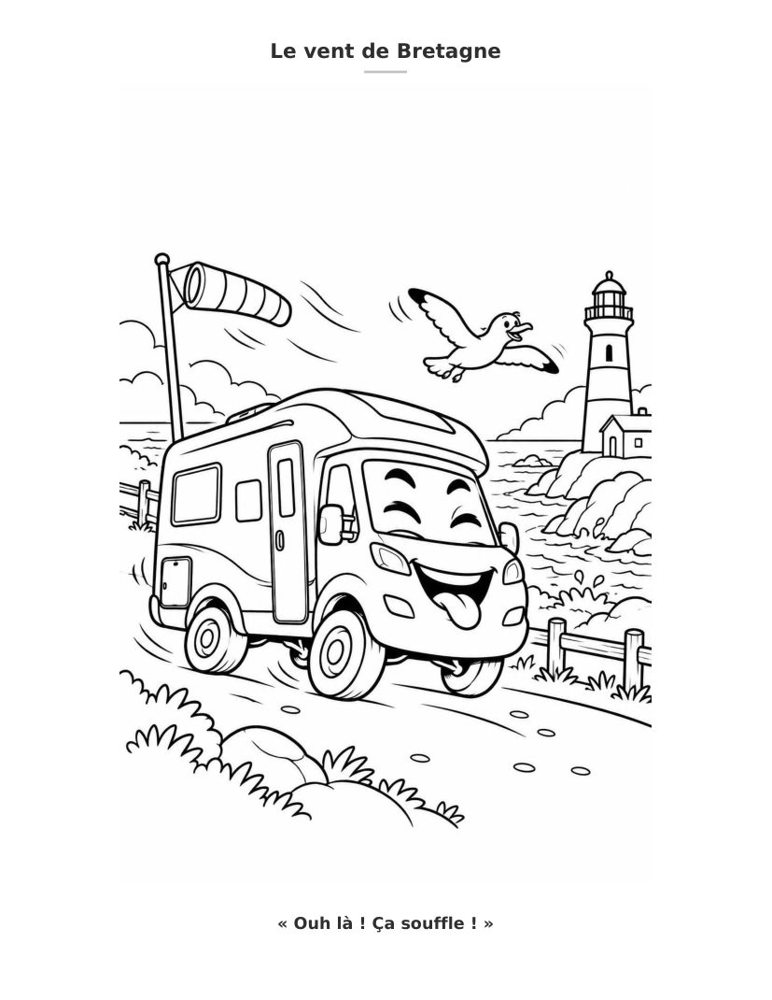

Coloriages et jeux • 5–7 ans
Léon découvre la France
De Paris à la Bretagne, Léon n’en fait qu’à sa tête ! Entre grimaces, châteaux et rencontres rigolotes, prépare tes crayons : ça va déménager !
Découvrir sur Amazon ↗Les aventures de Léon sur papier
Envie d'un livre de coloriage pour enfants qui change un peu ? Embarque avec Léon, notre camping-car aventurier ! À travers des dessins à colorier, des jeux et des activités amusantes, les enfants découvrent des pays, des paysages et des traditions tout en laissant libre cours à leur imagination.
De Paris à la Bretagne, Léon n’en fait qu’à sa tête ! Entre grimaces, châteaux et rencontres rigolotes, prépare tes crayons : ça va déménager !
Découvrir sur Amazon ↗
Léon a mis son plus beau tartan ! Mais au bord du loch Ness… gloups ! C’est quoi cette drôle de tête qui sort de l’eau ? Nessie, c’est toi ?
Découvrir sur Amazon ↗
Olé ! Léon se prend pour un danseur de flamenco ! Entre deux grimaces et trois tours de roue, arrivera-t-il à danser sans perdre ses bagages ?
Découvrir sur Amazon ↗
Six pays, un dragon et un bretzel géant ! Léon a encore trouvé le moyen de se mettre dans de drôles de situations. Et si tu venais l’aider ?
Découvrir sur Amazon ↗
Un âne, un chien, un chat et un coq veulent monter à bord de Léon ! Mais où va-t-il mettre tout ce petit monde ? Direction le pays des contes !
Découvrir sur Amazon ↗
Avec son chapeau à plume, Léon se croit le roi des montagnes ! Mais entre les palais, les lacs et les pauses gourmandes, il n’a pas fini de faire le clown !
Découvrir sur Amazon ↗
À l’abordage ! Léon a mis son chapeau de pirate et rêve de traverser l’océan ! Dauphins, voiliers et palmiers… Mais qui lui a donné le commandement du bateau ?
Découvrir sur Amazon ↗✏️ 🖍️ 🎨
Sept aventures, des coloriages et des jeux à découvrir !

De vrais extraits des livres : coloriages et petits défis !